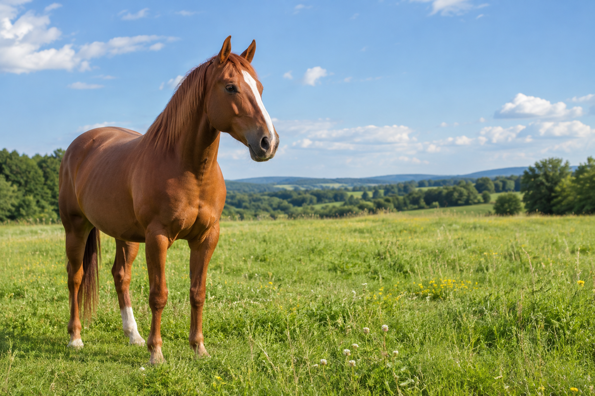
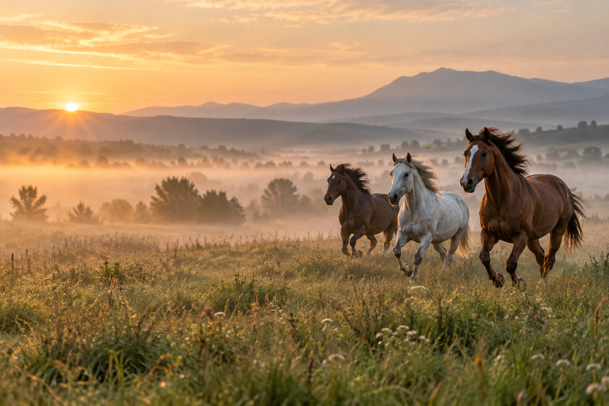

Арабський кінь - одна з найдавніших і найвідоміших верхових порід світу. Його легко впізнати за витонченим профілем голови, високо поставленим хвостом і виразними очима.

Порода сформувалася на Аравійському півострові в умовах посушливого клімату. Завдяки цьому арабські коні відзначаються витривалістю, добрим здоров’ям і здатністю долати великі відстані.
Арабських коней використовують у спортивних дисциплінах, кінних прогулянках і племінному розведенні. Їхня кров вплинула на формування багатьох сучасних верхових порід. Натисніть на праве зображення, щоб відкрити сторінку з фоновим малюнком.